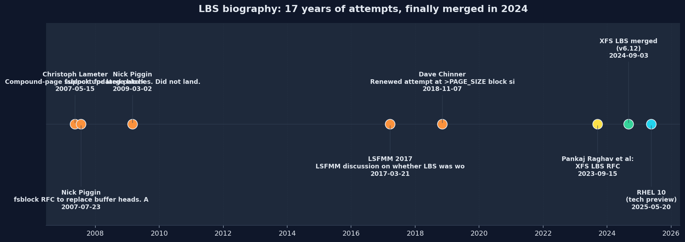
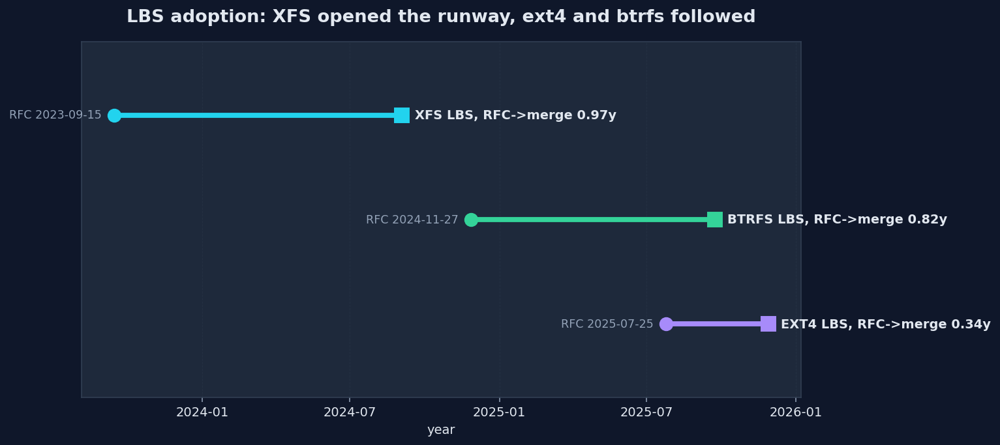
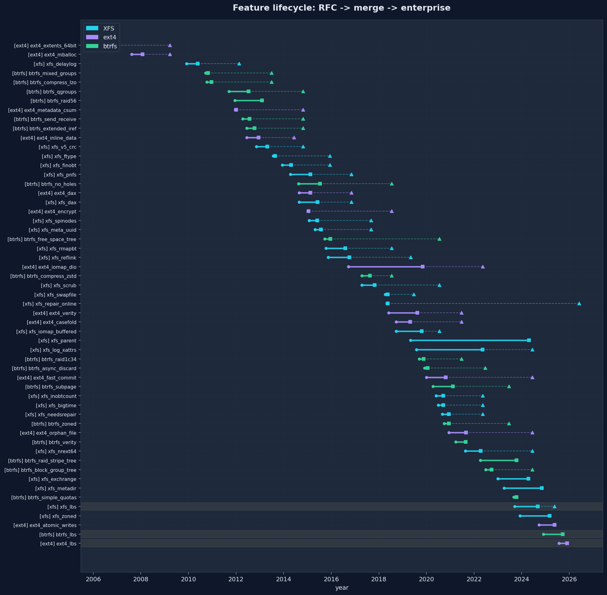
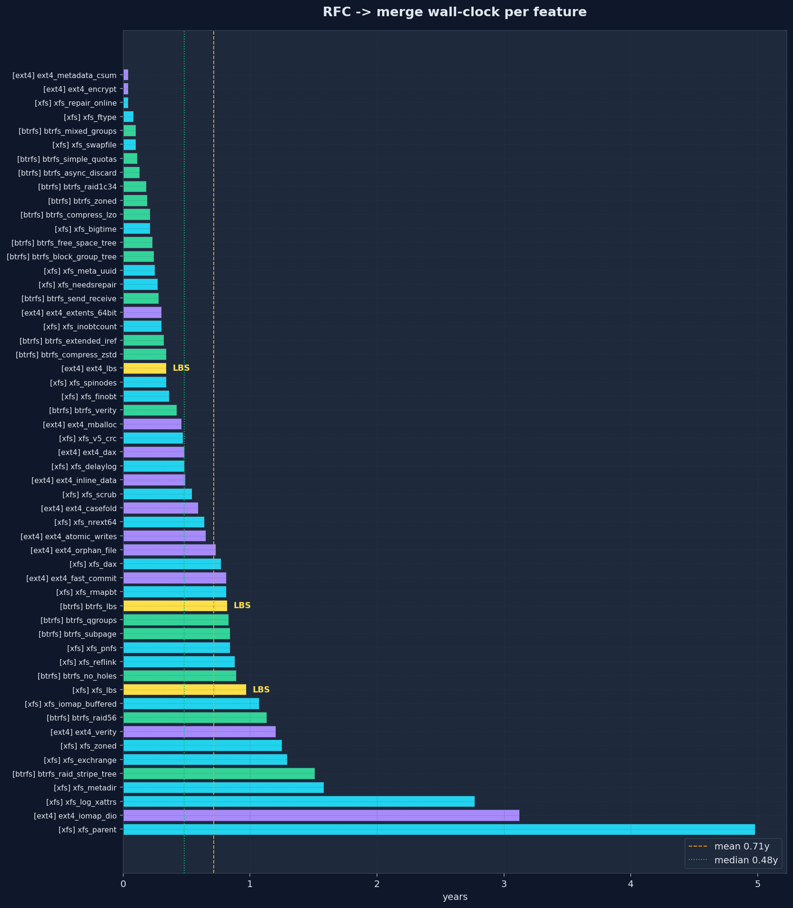
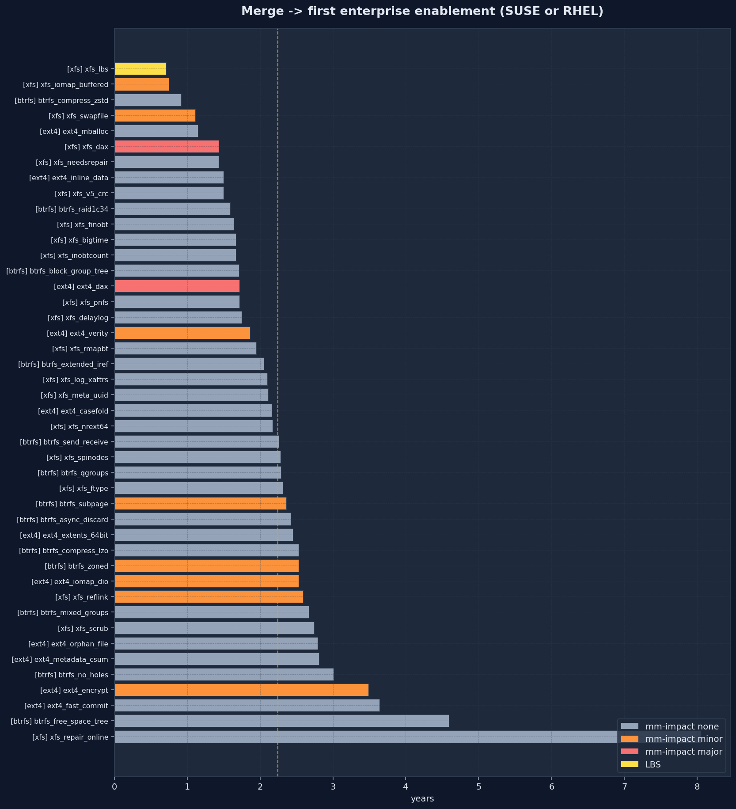
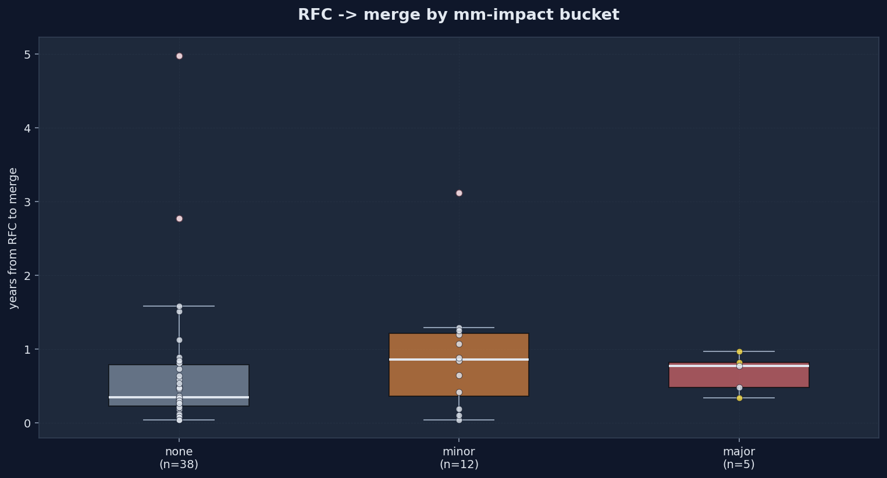
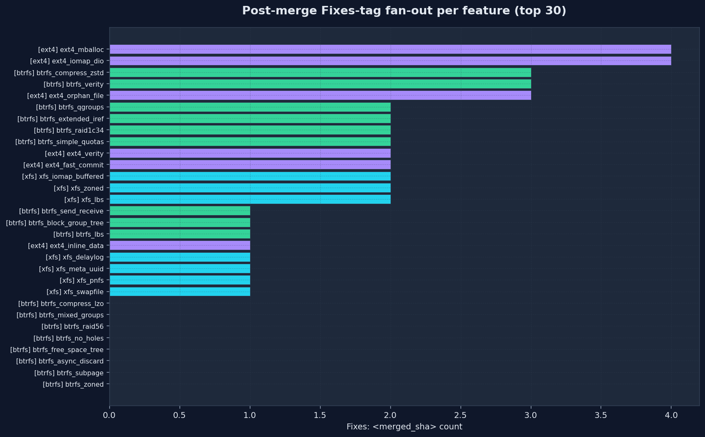

How long does it take to stabilize a Linux filesystem feature?
A catalog of 55 major XFS, ext4, and btrfs features and the wall-clock each took to go from RFC posting through merge through enterprise distribution enablement. Re-runnable: the pipeline derives merge dates and Fixes-tag fan-out from any kernel tree on disk.
Aggregate stabilization metrics across all 55 tracked features.
| metric | n | mean | median | p90 | max |
|---|---|---|---|---|---|
| RFC -> merge (all) | 55 | 0.71y | 0.48y | 1.27y | 4.98y |
| RFC -> merge (LBS excluded) | 52 | 0.71y | 0.47y | 1.29y | 4.98y |
| Merge -> enterprise (all) | 44 | 2.24y | 2.13y | 2.95y | 8.05y |
| RFC -> enterprise (all) | 44 | 2.82y | 2.59y | 4.29y | 8.09y |
| btrfs RFC -> merge | 18 | 0.49y | 0.3y | 0.96y | 1.51y |
| ext4 RFC -> merge | 13 | 0.71y | 0.49y | 1.12y | 3.12y |
| xfs RFC -> merge | 24 | 0.89y | 0.59y | 1.49y | 4.98y |
| mm_impact=none RFC -> merge | 38 | 0.65y | 0.35y | 1.24y | 4.98y |
| mm_impact=minor RFC -> merge | 12 | 0.92y | 0.86y | 1.29y | 3.12y |
| mm_impact=major RFC -> merge | 5 | 0.68y | 0.77y | 0.91y | 0.97y |
Across 55 features for which both RFC and merge dates are recorded, the median RFC-to-merge wall-clock is 0.48y and the mean is 0.71y. Removing LBS changes the global mean to 0.71y -- it is a small effect on the headline number because the RFC of the successful 2023 LBS attempt landed in 0.97y, well within the per-feature range.
LBS-on-XFS RFC-to-merge was 0.97y, versus the mm-impact-major bucket mean of 0.68y.
The interesting LBS number is not RFC-to-merge but first-idea-to-merge: from Christoph Lameter's 2007 compound-page RFC through Nick Piggin's fsblock work, the 2017 LSFMM revisit, Dave Chinner's 2018 attempt, and finally Pankaj Raghav's 2023 series, the total wall-clock is 17.31y. The 2023 attempt is also the first one whose test surface was driven by kdevops with AI-assisted triage rather than ad-hoc xfstests runs.
Large Block Sizes is the only feature in the catalog with a multi-RFC arc spanning a decade and a half. The chart records every attempt, succeeded or not.

RFC 2023-09-15 -> merged 2024-09-03 (vfs-6.12.blocksize)
RFC 2024-11-27 -> merged 2025-09-23 (v6.18-rc1)
RFC 2025-07-25 -> merged 2025-11-28 (v6.19-rc1)
The mm and iomap large-folio infrastructure that LBS-on-XFS forced into existence was reused by ext4 and btrfs at much lower cost. Both followed inside thirteen months:

A long-form biography of LBS in three phases: Lameter 2007 -> Piggin fsblock -> Chinner 2014/2018 -> Raghav 2023, then the v6.15 block-device cache work that unlocked ext4, then ext4 and btrfs in 2025. Every commit, every stalled attempt, every reference.
Per-feature long-form biographies written by the people who lived through the work. Read the index or pitch a new one.
If you maintained, designed, or stabilized a major Linux filesystem feature, please consider contributing a case study. The catalog row gives the numbers; only the people who were on the threads can give the context. We are especially looking for biographies of features that touched core mm: DAX, large folios, idmapped mounts, the buffer-head retirement effort, and the next round of MM-impact filesystem work.
PNG figures generated from the same JSON the report pulls from.





24 features catalogued, ordered by RFC date.
Reworks XFS journaling to delay log buffer writes, batching changes and dramatically reducing journal I/O on metadata-heavy workloads. The replacement for the original transaction model and the foundation for everything that came after on the log.
XFS_SB_VERSION_5 format with CRC32c protection on every metadata block, owner/UUID stamps, and self-describing block headers. Foundation for every later feature bit and required for online scrub/repair.
INCOMPAT_FTYPE records inode type in directory entries to avoid readdir stat() back-references. Standard POSIX-quality readdir performance.
RO_COMPAT_FINOBT adds a btree of free inode chunks distinct from the inode btree, dramatically accelerating inode allocation on aged filesystems.
Block-layout pNFS server export operations for XFS, enabling clients to perform direct device I/O bypassing the NFS data server.
Direct access to persistent memory bypassing the page cache. Required substantial mm changes for devmap pages and per-inode DAX state.
INCOMPAT_SPINODES allows inode chunks to be sparse rather than fixed 64-inode aligned, dramatically improving inode allocation on small or fragmented filesystems.
INCOMPAT_META_UUID separates the UUID stamped in metadata blocks from the user-visible UUID, allowing UUID change without rewriting metadata.
RO_COMPAT_RMAPBT records the owner of every allocated extent, enabling reflink, online repair, and forward/reverse extent walking.
RO_COMPAT_REFLINK adds CoW shared data extents using refcount btrees, enabling cp --reflink and dedup. The user-visible payoff of rmapbt.
XFS_IOC_SCRUB_METADATA ioctl plus the in-kernel scrub infrastructure that validates metadata consistency on a live filesystem.
swap_activate via iomap, finally allowing /swapfile on XFS without bmap quirks.
In-kernel metadata repair distinct from scrub: actually fixes detected damage on a live filesystem.
XFS writeback path lifted to iomap, dropping the buffer_head dependency on the buffered I/O path. Foundation for large folios in the page cache and LBS.
INCOMPAT_PARENT stores parent directory inode references in extended attributes, making path reconstruction and online repair tractable without scrubbing the directory tree.
INCOMPAT_LOG_XATTRS adds delayed attribute changes journaled through intent logging, removing the need for the old transaction-roll dance for xattr updates and unblocking parent pointers and online repair.
RO_COMPAT_INOBTCNT caches inode-btree block counts in the AGI header to speed up mount-time AG header parsing.
INCOMPAT_BIGTIME extends the on-disk timestamp epoch beyond 2038 by reinterpreting the seconds field as unsigned nanoseconds since 1901.
INCOMPAT_NEEDSREPAIR marks a filesystem as requiring xfs_repair before further use, used by online repair to fence partially-repaired metadata.
INCOMPAT_NREXT64 widens on-disk extent count fields to 64 bits, removing the 4 billion data extent limit per inode.
INCOMPAT_EXCHRANGE adds an atomic file range exchange operation, the building block for xfs_io exchangerange and metadirectory swap, plus the file-side of atomic writes.
INCOMPAT_METADIR moves quota, rt summary, and rt bitmap inodes into a dedicated metadata directory tree, unblocking realtime groups and metadata-only btree types.
Filesystem block size larger than PAGE_SIZE on XFS, enabled by a multi-year stack of mm and iomap changes: large folios, mapping_set_folio_min_order, FS_LBS gating, and an LBS-aware block layer. The first XFS feature whose schedule visibly accelerated under kdevops-driven automated testing.
INCOMPAT_ZONED arranges the realtime device into zones for SMR/ZNS devices, with garbage collection and per-zone metadata.
13 features catalogued, ordered by RFC date.
INCOMPAT_EXTENTS and INCOMPAT_64BIT, ext4's two defining feature bits over ext3: extent-mapped allocation instead of indirect blocks, and 48-bit physical block addressing.
Buddy-allocator-style multi-block allocator replacing ext3's single-block allocator. Required for usable performance once extents arrived.
RO_COMPAT_METADATA_CSUM adds CRC32c protection on inodes, block group descriptors, journal blocks, and other metadata.
INCOMPAT_INLINE_DATA stores small file contents inside the inode body, skipping a block allocation for tiny files.
Direct access to persistent memory, mirroring the XFS DAX work. Shared most of its mm/ infrastructure with the XFS path.
INCOMPAT_ENCRYPT adds per-file content and filename encryption with policies stored as extended attributes. ext4 led; later generalized as fscrypt.
Direct I/O path lifted to iomap, replacing the legacy ext4 DIO machinery and improving large-IO performance.
RO_COMPAT_VERITY adds Merkle-tree-based file integrity verification, designed for read-only system images on Android.
INCOMPAT_CASEFOLD stores a charset encoding in the superblock so directory lookups can be performed case-insensitively without touching VFS.
INCOMPAT_FAST_COMMIT adds a small per-fsync log next to the main journal that records only the changes needed to recover the most recent operations, dramatically reducing fsync latency.
COMPAT_ORPHAN_FILE replaces the in-superblock orphan inode list with a dedicated file, fixing a long-standing serialization bottleneck on truncate/unlink-heavy workloads.
Atomic write support for ext4 using bigalloc, exposing the device's atomic write unit through the statx unit-max-opt field.
Block sizes larger than PAGE_SIZE on ext4. Lands after XFS once the underlying mm and iomap large-folio infrastructure was already in place.
18 features catalogued, ordered by RFC date.
INCOMPAT_MIXED_GROUPS lets a single block group hold both data and metadata extents, useful for tiny filesystems.
Adds LZO as an alternative compression codec alongside zlib for the existing INCOMPAT_COMPRESS_LZO bit, trading compression ratio for CPU.
Subvolume-level quota groups with hierarchical accounting and exclusive/shared usage tracking.
INCOMPAT_RAID56 adds parity RAID 5/6 to btrfs's multi-device layer. Famously took years to stabilize.
Send a serialized stream describing a subvolume, with full and incremental variants, plus a kernel receive path. Foundation for btrfs replication.
INCOMPAT_EXTENDED_IREF removes btrfs's old hardlink-per-directory limit by allowing multiple iref entries per inode.
INCOMPAT_NO_HOLES drops the file_extent_item placeholder records for holes in sparse files, reducing metadata size.
COMPAT_RO_FREE_SPACE_TREE replaces the legacy free-space cache file with a btree, fixing recovery and mount-time consistency issues.
zstd added as the third compression algorithm, providing better ratio than lzo and faster decompression than zlib at comparable ratios.
INCOMPAT_RAID1C34 adds 3-way and 4-way RAID1 profiles, addressing reliability needs the original RAID1 (2-copy) could not meet.
Defers discard ranges to a background worker, decoupling them from extent freeing and avoiding latency spikes.
Support for sector_size < PAGE_SIZE, in particular 4K btrfs blocks on 64K-page ARM systems. The pre-LBS plumbing for non-PAGE_SIZE blocks.
INCOMPAT_ZONED makes btrfs aware of HM-SMR and ZNS zoned devices, with sequential write enforcement and zone-aware allocator.
fs-verity support for btrfs, mirroring the ext4 work. Verity Merkle tree stored as xattrs.
INCOMPAT_RAID_STRIPE_TREE adds an explicit on-disk stripe-to-physical mapping, the missing piece that lets btrfs RAID work correctly on zoned devices.
COMPAT_RO_BLOCK_GROUP_TREE moves block group items into a dedicated tree, fixing mount-time scan cost on large filesystems.
Lightweight quota mode that drops the per-extent tracking of full qgroups in exchange for cheap shared-vs-owned accounting suited to container workloads.
Block sizes larger than PAGE_SIZE on btrfs. Followed XFS and rode the same mm/iomap large-folio runway; btrfs further had to extend its pre-existing subpage machinery to symmetric bs > ps territory.
Each feature is represented as a JSON record under
data/features_<fs>.json with
a seed commit SHA (the commit that landed the feature flag or
enabling code), an RFC date pointing at lore.kernel.org or the LWN
announcement, hand-curated LSFMM exposure and distro enablement, an
MM-impact classification (none / minor / major), and free-text notes.
The pipeline (scripts/enrich.py)
uses git describe --contains --match v* against a local
kernel tree to derive the kernel release that contains the seed
commit, and counts subsequent commits whose message bodies contain
Fixes: <short-sha> as a proxy for post-merge
fragility. scripts/analyze.py joins everything, computes
derived per-feature metrics and aggregate statistics, and emits CSV,
JSON, Markdown, and PNG outputs. The HTML report is just a renderer
on top of the same JSON.
MM-impact is the qualitative classification the project most cares about. "none" covers pure-fs changes. "minor" covers iomap or page-cache hooks that did not require generic mm work. "major" covers DAX and LBS: the two features that drove year-scale mm refactors.
The catalog is incomplete by design: minor cleanups and bug-fix
features are out of scope, only landings that introduced a new
format-level or interface-level capability are tracked. To add a
missed feature, append a record to the appropriate JSON file and
re-run make.